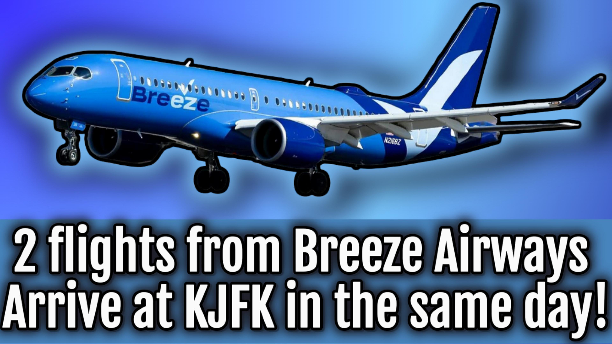

Breeze Airways A220s Make Rare JFK Appearance - Two Flights in One Day

Published September 14, 2025
Aviation history was made at New York’s John F. Kennedy International Airport on September 14, 2025, when not one, but two Breeze Airways Airbus A220-300s touched down at the airport.
Breeze does not normally operate scheduled service into JFK, making this a rare and highly significant occasion for aviation enthusiasts and the airline itself.
The pair of flights included MXY536, an emergency diversion to JFK, originally flying from Hartford’s Bradley International (BDL) to Fort Myers (RSW), and MXY9247, a replacement flight routed from Providence (PVD) to JFK to carry the affected passengers to Fort Myers (RSW).
Later that day, the replacement flight became MXY536, which the emergency diversion's callsign, continuing the journey.
The Diversion - Flight MXY536
Breeze Airways Flight 536 began its journey as a regularly scheduled flight from Hartford (BDL) to Fort Myers (RSW). Midway through the trip, the aircraft encountered circumstances that required a diversion to the nearest suitable large airport.
JFK, with its long runways and robust emergency infrastructure, became the designated diversion point.
The A220 touched down on Runway 13R, JFK’s longest runway, offering maximum safety margins. One of the first Breeze Airways A220 arrival has just landed at the airport.
.png)
Flight Data for MXY536
| Detail | Information |
|---|
| Origin | Hartford Bradley (BDL) |
| Destination (planned) | Fort Myers Southwest Florida (RSW) |
| Actual Diversion | New York JFK (JFK) |
| Runway | 13R (14,511 ft) |
| Callsign | MXY536 |
The Replacement Flight – MXY9247
Following the diversion, Breeze quickly dispatched another Airbus A220 to support repositioning efforts. This aircraft operated as MXY9247, flying directly from Providence (PVD) into JFK.
The flight landed on Runway 22L, completing Breeze’s unprecedented double presence at the New York gateway.
Normally, Breeze focuses on secondary airports, avoiding large congested hubs like JFK. This made the event not only operationally significant but also historically unique.
.png)
Flight Data – MXY9247
| Detail | Information |
|---|
| Origin | Providence T.F. Green (PVD) |
| Destination | New York JFK (JFK) |
| Runway | 22L |
| Callsign | MXY9247 |
Why This Is Special
Breeze Airways, founded by aviation entrepreneur David Neeleman, has built its strategy on connecting underserved city pairs using efficient, comfortable Airbus A220-300s.
New York JFK, one of the busiest airports in the world, does not currently appear in Breeze’s scheduled network. This made the September 14th arrivals truly extraordinary.
For JFK spotters, the sudden appearance of not one, but two Breeze A220s in the same afternoon was a once-in-a-lifetime opportunity. For Breeze, it demonstrated the flexibility of the A220 to serve even the most demanding airports.
Breeze Airways - A Growing Airline
Breeze Airways launched operations in 2021, focusing on affordable point-to-point routes across the United States. With its tagline “Nice, New, and Nonstop,” Breeze emphasizes convenience and comfort.
The airline initially operated Embraer E190 and E195 jets but is now standardizing around the Airbus A220-300.
Key Facts About Breeze
- Founded: 2021 by David Neeleman (founder of JetBlue and Azul)
- Fleet: Primarily Airbus A220-300 and their Embraer E190AR fleet
- Strategy: Serving underserved/unpopular cities
- Headquarters: Cottonwood Heights, Utah
The Airbus A220-300
Breeze’s flagship aircraft, the Airbus A220-300, is one of the most modern and fuel-efficient narrow-body jets in operation today. Known for its quiet engines and passenger-friendly cabin design, the A220 has become central to Breeze’s expansion strategy.
Broader Aviation Significance
JFK rarely sees Breeze operations, making September 14 a standout day in the airport’s history. This event highlights the unpredictable nature of aviation — where diversions, repositioning flights, and airline strategy all intersect to create remarkable moments.
For me, this event will be remembered in the same category as other unique visitors: special government flights, charter arrivals, and unusual diversions. Breeze’s A220s, gleaming in their light blue livery, joined this tradition with style.
Conclusion
Two Breeze Airways Airbus A220s arriving at JFK on the same day may never happen again. What began as an emergency diversion turned into an impromptu showcase for Breeze at New York’s busiest airport.
For me, the memory of MXY536 on 13R and MXY9247 on 22L will live on as a rare double sighting. For Breeze, the event underscores the reliability and flexibility of the A220 fleet. And for JFK, it was yet another reminder that no two days in aviation are ever the same.